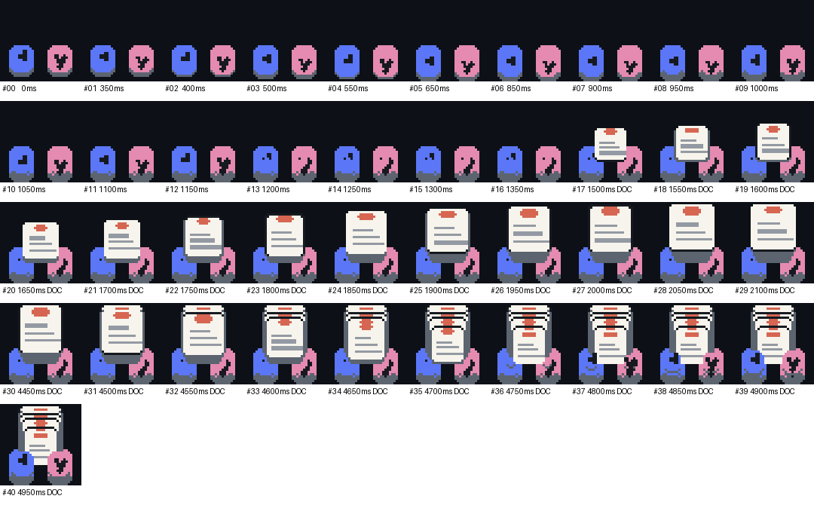

修了什么：之前 optimize=True + disposal=2 让 39/41 帧变成局部差分帧，
清除整帧后只画局部，Chrome/文件管理器渲染不出 clipboard。现改为 disposal=1（保留前帧、只更新局部），透明度 0 保留。
文件 superv-REBUILT-1x.gif：41 帧 / 5000ms / disposal 全部为 1 / 逐帧证据见下。

源码：gen_markers.py（同目录）。关键行在最底部 save_gif()。